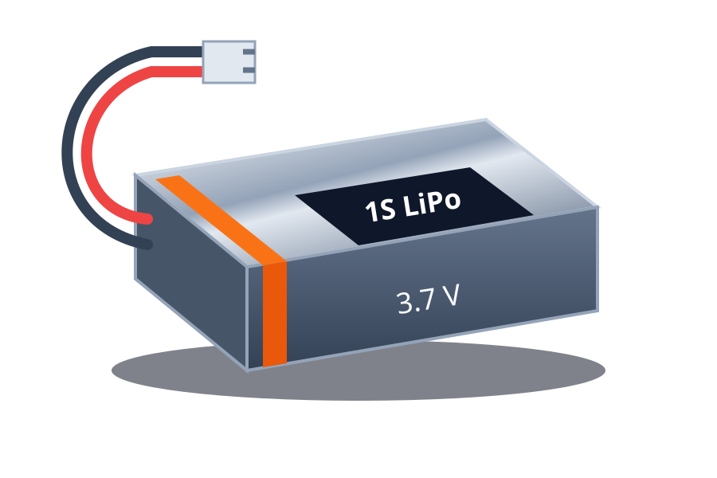
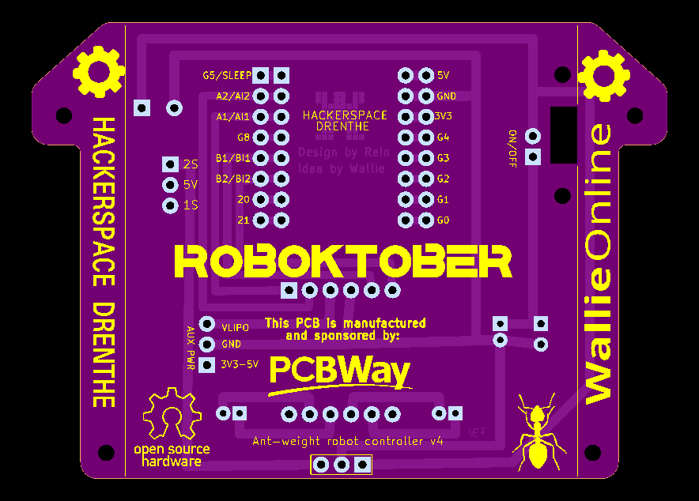
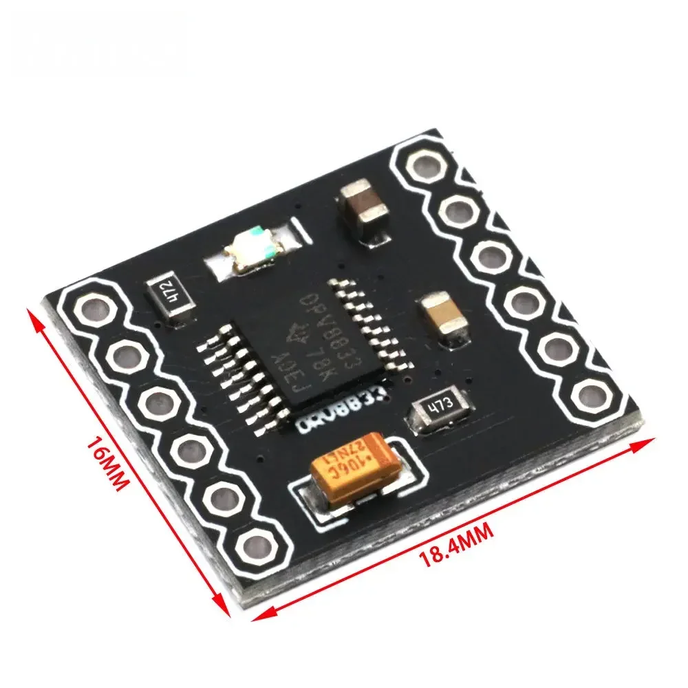
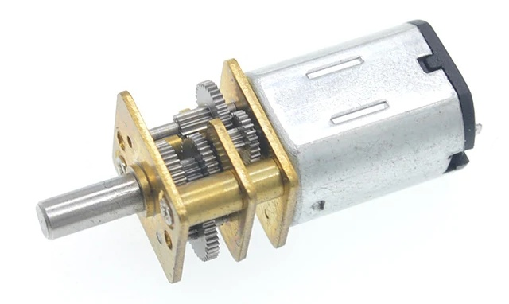
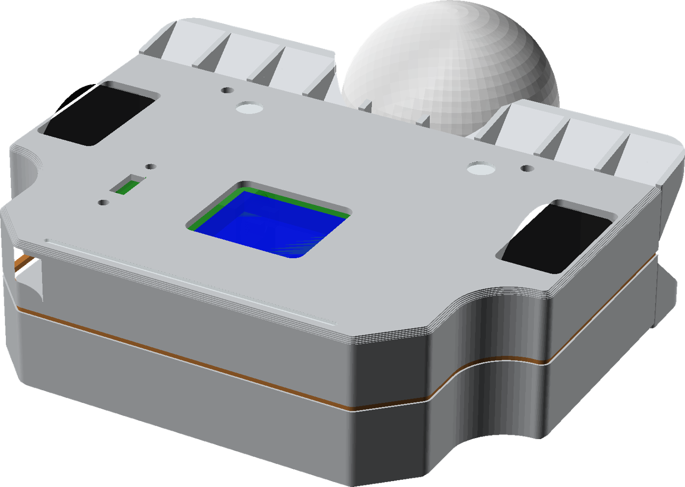
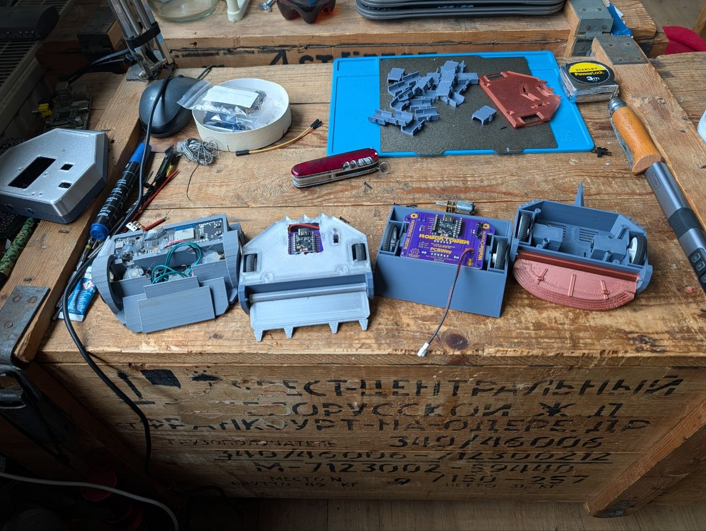

[3.1 · 0:00–0:30] COLD OPEN — groot Roboktober-logo in beeld. Robot rijdt via de telefoon op een begrensd vlak. Geen voorwerpen van tafel of richting publiek duwen.
Pas daarna: "Goedenavond, ik ben Rein." → volgende slide.
Van joystick tot wiel
Van software naar beweging in een robot van 150 gram
Rein Velt · PHP Meetup Groningen · 5 november 2026
Hackerspace Drenthe
[3.1] Titel. Niet lang blijven hangen.
Wie ben ik
Rein Velt · software engineer & maker
Overdag code, 's avonds de soldeerbout.
Software Engineer bij Dawn Technology
Oprichter Nederlandse PHP Gebruikersgroep (2001) → PHPBenelux
Oprichter Hackerspace Drenthe (Coevorden)
Van een PHP-community bouwen… naar een maker-community bouwen
Dit voorjaar (maart–mei): Mei MeshCore Maand · Drenthenoodnetwerk.nl
Deze zomer: Roboktober → website, printplaten, onderdelen, chassis en organisatie
Ik ben meer bouwer dan prater — dus vandaag laat ik vooral zien wát we gebouwd hebben.
Hackerspace Drenthe, bouwavond
[3.1 · ±1 min] Dawn alleen als werkgever noemen, geen relatie met Roboktober.
In maart, april en mei bezig geweest met Mei MeshCore Maand / Drenthenoodnetwerk.nl; daarna deze zomer Roboktober.
Haakje: "Van eerste commit in juli naar de kickoff in oktober — daar kom ik aan het eind op terug."
Bouwer, geen prater: luchtig brengen, kort houden — daarna door naar de inhoud.
Handen omhoog
Wie heeft weleens iets gesoldeerd?
Wie heeft een Arduino of ESP32 geprogrammeerd?
[3.1] Peiling: bepaalt hoeveel uitleg in het KiCad-blok (3.5.4) nodig is. Onthoud de verhouding.
De rode draad
Wat gebeurt er als je de joystick naar voren duwt?
Dat laten we zo zien: van smartphone naar motor .
① Telefoon of remote
WiFi · ESP-NOW
[3.1 · ±3:00] Belofte aan het publiek. Echte WebUI-screenshot + echte PCB v4 (KiCad-render, onderkant): ① telefoon → ② ESP32-C3 → ③ PWM → ④ DRV8833 → ⑤ wielen. Alleen kort laten zien; komt in 3.5.1 terug.
HET EVENT
Roboktober
Hoe het begon — en wat is een antweight eigenlijk?
Hoe het begon
Wallie (WallieOnline)
▶ Wallie aan het woord · 1:24
Je browser kan deze video niet afspelen.
Fragment uit de kickoff · 0:26–1:50
Al heel lang bezig met antweight -robots
Team captain Team Upstart — o.a. Cookiemonster, TLC, Kecil
🏆 Veel prijzen gewonnen — o.a. 2e plaats op Boeliebots 2026 (Groningen)
Komt vaak naar de hackerspace om robotonderdelen te maken met de freesbank en CNC-apparatuur
Idee: samen een event maken → mensen enthousiast maken voor techniek én voor de hackerspace
[3.2 · ±2 min] Geef kort context bij Wallie en speel daarna het fragment af met de bediening onder de video. Fragment uit de kickoff-opname, 0:26–1:50. Offline beschikbaar; toestemming van Wallie controleren.
Vandaag · onder de motorkap
Zelfde robot, een andere blik
Bij de bouwavonden
Samen bouwen en uitproberen
Kinderen, families en makers
Zo snel mogelijk iets dat rijdt
Vandaag als developers
Wat gebeurt er tussen input en beweging?
Interfaces, code en schema's Welke softwarekennis neem je mee?
Dus vandaag: code · printplaat · schema's
Geen elektronicakennis nodig. Stel gerust een vraag als ik een stap oversla.
[3.3 · ±20 s] Geen verschil in slimheid, maar een andere invalshoek. We leggen nieuwe hardwarebegrippen uit vanuit bekende softwareprincipes.
Het event
Roboktober
Een maand bouwen, testen en robot-actie — Hackerspace Drenthe + WallieOnline . Alleen of als team: kinderen, families, collega's.
Wanneer Wat 7 okt Kickoff: live demo, zelf sturen, start bouwen (livestream ) 14 okt Workshop antweight bouwen 21 okt Afbouwen en testen 28 okt Technische keuring + Battle Day
3D-printers, lasercutters en begeleiding in de hackerspace.
Bouwavond in de hackerspace
[3.3 · ±1 min] Kort. Cijfers bewaren voor de terugblik (3.9). Inclusief de invalshoekslide maximaal 2 minuten.
Wat is een antweight?
150 g
maximaal gewicht, alles inbegrepen
~€25 per kit
15 cm max. 15×15×15 cm
Klein, goedkoop, relatief veilig, snel resultaat
[3.4 · ±1 min] Waarom antweight: goedkoop, klein, relatief veilig, je hebt snel iets dat rijdt.
Max. formaat: past in een kubus van 15×15×15 cm.
Onze klasse & de veiligheidsgrenzen
Onze robot
Antweight — maximaal 150 g Accu en elektronica tellen mee
Bij Roboktober: duwen, niet slopen
Andere evenementen: controleer het eigen reglement
Typen
Pushers / wedges
Flippers
Spinners
Veiligheid
Open arena → bij Roboktober 2026 geen actieve wapens (alleen duwen/wedges)Actieve wapens vragen geschikte afscherming, regels en keuring
Keuring · failsafe
Veiligheid zit niet alleen in de arena, maar ook in de code — dat zien we zo.
[3.4 · ±1 min] Alleen onze klasse uitleggen. Een gesloten arena is op zichzelf geen toestemming voor actieve wapens.
DE ROBOT
Volg één commando
Van duim op het scherm tot wiel op de vloer
[3.5 · start kernblok, 27 min] Eerst de echte robot open op tafel en de onderdelen aanwijzen, dan op dezelfde overzichtsslide de commandoroute. Daarna controller → firmware met PWM/H-brug en failsafe → print → chassis.
De robot open op tafel · wat zit waar? Van onderdelen naar beweging · volg één commando
3D-render · chassis zonder elektronica 1 / 7 · DE BEHUIZING
Chassis Houdt alle onderdelen op hun plek.
Ruimte voor accu, print en aandrijving. Zelf te ontwerpen en te 3D-printen.

Schematische render · 1S LiPo 2 / 7 · DE ENERGIE
Accu Levert de energie voor de robot.
1S LiPo: 3,7 V nominaal, 4,2 V vol. De motorstroom komt hiervandaan, niet uit de ESP32.
Schematisch · schakelaar óf uitneembare plug/pincap · beide uit 3 / 7 · FYSIEK UITSCHAKELEN
Aan/uit Schakelaar of uitneembare plug/pincap.
Onderbreekt de accuvoeding fysiek. Bereikbaar van buitenaf en geschikt voor de motorstroom.
Motoren stoppen via software is niet hetzelfde als stroom uit.

KiCad 3D-render · kale PCB v4 4 / 7 · DE VERBINDINGEN
Printplaat · PCB Verbindt de onderdelen met koperbanen.
Aansluitpunten voor voeding, ESP32, motordriver en motoren. De printplaat zelf voert geen code uit.
Foto: Tobias Weltner · done.land CC BY-ND 4.0 · ongewijzigd 5 / 7 · HET BREIN
ESP32-C3 SuperMini Hier draait onze firmware.
Ontvangt draadloze commando's, rekent gas en sturen om en geeft stuursignalen aan de motordriver.

Productfoto: AliExpress · aangeleverde bron 6 / 7 · DE MOTORAANSTURING
Motordriver DRV8833: tussen ESP32 en motoren.
Schakelt de accuspanning naar twee motoren. De ESP32 bepaalt wat er moet gebeuren; de driver schakelt de motorstroom.

Productfoto’s: AliExpress · N20-motor (uitsnede) · wiel 7 / 7 · DE BEWEGING
Motoren + wielen Twee N20-motoren drijven de wielen aan.
Links en rechts apart aansturen laat de robot rijden en sturen.
Wat gebeurt er nu als je vooruit duwt?
1S LiPo
3,7–4,2 V
N20 N20 ESP32-C3
DRV8833
📶 gas + sturen
GPIO6
GPIO10
PWM ≈ 78 %
AAN/UIT
⚡ 3,7 V
aan / uit
PCB v4, onderkant · accu, motoren en wielen schematisch · chassis niet afgebeeld
📶 Signaal binnen ESP32-C3 ontvangt gas + sturen 🧠 ESP stuurt aan motorcommando 200 → PWM ≈ 78 % 🔋 Accu levert stroom 1S LiPo → DRV8833 ⚡ DRV8833 schakelt schakelt de accuspanning naar de motoren 🛞 Wielen draaien beide even snel aangestuurd → (ongeveer) rechtdoor
[3.5.1 · 2 min totaal] Zet de echte robot open op tafel, uitgeschakeld. Begin met het chassis, klik dan 6×: accu → aan/uit → kale PCB → ESP32 → motordriver → motoren/wielen. Per stap één functie, ongeveer 60 seconden samen. De schakelaar of plug/pincap onderbreekt de voeding fysiek, in serie met de accu, nooit over de accupolen. Gebruik alleen een uitvoering geschikt voor de motorstroom en volg het evenementreglement. Dit is geen softwarefailsafe; ontkoppel ook USB of andere voedingen vóór werkzaamheden. PCB en ESP32 expliciet onderscheiden: koperbanen verbinden, de microcontroller voert code uit. De ESP32-C3 SuperMini is een echte, ongewijzigde foto van Tobias Weltner (done.land, CC BY-ND 4.0), lokaal meegeleverd. DRV8833, N20-motor en wiel zijn door Rein aangeleverde AliExpress-productfoto's; er is geen vrije licentie vastgesteld. De motorfoto is uitgesneden tot één complete motor; het wiel staat ernaast. Accu en voedingsonderbreking zijn schematisch. Nog geen pinnen, schema's of CAD-code.
Brug: "Dit zijn de onderdelen. Wat gebeurt er nu als ik op mijn telefoon vooruit duw?" De volgende klik toont het overzicht met de eerste commandostap. Klik daarna 4× tot de wielen draaien. In totaal 11 klikken op deze slide; terugklikken doorloopt alle stappen in omgekeerde volgorde.
Overzicht, nog geen pinnen uit het hoofd leren. Rekenvoorbeeld voor de rest van de talk: NA schalen gas 200, sturen 0 → links 200, rechts 200 → ongeveer 78% dutycycle.
Joystickwaarden in het RC-protocol en motorcommando's zijn verschillende schalen. Bij de ontvanger leggen we die omzetting uit.
De ESP levert de stuursignalen; de accu levert via de DRV8833 de motorstroom.
Alle lijnen zijn de échte koperbanen uit KiCad (pads/tracks omgerekend naar de render, ±1 px).
Blauw fel = GPIO6 + GPIO10 (PWM), blauw dim = GPIO7 + GPIO9 (staan op 0). Rood = accu → aan/uit-schakelaar → helemaal over de rand → VM van de DRV8833.
Geel = motoruitgangen M1A/M1B en M2A/M2B naar de JST-connectoren. Failsafe: na 500 ms geen pakket → alles 0.
STAP 1 · AFSTANDSBEDIENING · 5 MIN
De controller
Hoe wordt een tik op je scherm een commando?
[3.5.2 start] Bekend terrein: telefoon, browser, WiFi.
Twee controllers, één doel
📱 Telefoon (WebUI) Robot is zelf het WiFi-netwerk Browser, geen app WebSocket 🎮 Eigen remote Tweede ESP32 + analoge stick → ESP-NOW Óf een gewone RC-zender + ontvanger → CPPM Twee aparte routes, zelfde resultaat
Beide leveren hetzelfde af: gas + sturen
We beginnen bij de telefoon; voor de code kijken we daarna naar de openbare ESP-NOW-variant.
[3.5.2 · 0–1,5 min] Twee manieren om te sturen: met je telefoon, of met een zelfgebouwde afstandsbediening.
WebUI · de robot als WiFi-toegangspunt
WiFi worc-424242 · wachtwoord worc1234
Browser naar http://192.168.4.1
Geen app, geen router, geen zender
WebSocket: één open lijn i.p.v. steeds opnieuw verbinden → weinig vertragingKies: joystick of tank (twee sliders)
Gas en sturen mixen, draairichting omkeren: instellen i.p.v. code wijzigen
Nieuwe firmware van Wallie: release op 5 november 2026 — vandaag · Wallies GitHub
Net als de instellingenpagina van je router thuis.
[3.5.2 · 1,5–3 min] Geen code op deze slide: dit is het WebUI-overzicht. Wallie heeft de release van zijn nieuwe firmware aangekondigd voor 5 november 2026, de dag van deze presentatie. Link naar zijn GitHub-profiel; controleer op de dag zelf of de release beschikbaar is.
Zelfde mixing/motorcode als de ESP-NOW-firmware, alleen ander transport.
Eigen remote · ESP32 → ESP-NOW
Eén gedeeld formaat — dezelfde structuur in beide programma's:
typedef struct rc_data_t {
uint16_t gAIL, gELE, gTHR, gRUD, gAUX1, gAUX2, gAUX3, gAUX4; // 8 × 2 = 16 bytes
} rc_data_t;
rc_data_t gEspn;
① Zender vult in en verstuurt (elke 20 ms)
// Ingekort: kanalen vullen, daarna verzenden.
if (gStick[AIL]) gEspn.gAIL = gStick[AIL]; // sturen
if (gStick[ELE]) gEspn.gELE = gStick[ELE]; // gas
// … overige kanalen …
esp_now_send(0, (uint8_t *) &gEspn, sizeof(gEspn));
worc-remote-esp32.ino#L221–235
② Ontvanger controleert de lengte en leest de structuur
void OnDataRecv(const uint8_t *mac,
const uint8_t *incomingData, int len) {
if (len == sizeof(gEspn)) {
memcpy(&gEspn, incomingData, sizeof(gEspn));
// … kanaalwaarden controleren en schalen …
lastCommandTime = millis();
}
}
worc-esp32c3-drv8833-espnow.ino#L129–150
Zoals pack()/unpack(): 16 ruwe bytes. Zender en ontvanger moeten precies hetzelfde formaat gebruiken.
[3.5.2 · laatste 2 min] Vanaf hier openbare ESP-NOW-code. De WebUI gebruikt een ander transport; mixing en motorcode zijn hetzelfde.
Struct staat in beide repo's als 8 losse regels; hier op één regel gezet. Commentaar (sturen/gas, waarden) is van mij.
Klik 1: zender (gEspn vullen → esp_now_send). Klik 2: ontvanger (memcpy terug in dezelfde struct). Klik 3: conclusie.
Voor PHP'ers: zoals pack()/unpack() met hetzelfde formaat aan beide kanten — verschil in struct = onzin-waarden.
FYSIEK MOMENT: remote rondgeven.
STAP 2–4 · FIRMWARE EN MOTORSTURING · 12 MIN
De firmware
Van ontvangen bericht naar een motor die draait
Flashen vanuit de browser
Web flasher (Web Serial): USB-kabel erin, knop indrukken, klaarGeen toolchain, geen Arduino IDE
Alleen Chromium-browsers
Valkuilen: USB-kabel die alleen laadt , ontbrekende driver
Van browser naar chip Browser → USB → ESP32
Web Serial geeft de browser toegang tot de seriële verbinding.
Inspiratie: wallieonline.nl/blogs/worc-robot-controller-nl.html
Firmware-update zoals bij je printer of router — maar dan via de browser.
Nu staat de software op de chip. Wat doet die met een commando?
[3.5.3 start] Eerst: hoe komt de firmware op de chip? Daarna: wat staat erin.
De volledige firmware · ESP-NOW + DRV8833
1 / 9 · L19–30
Welke hardware gebruiken we?
Wat: bibliotheken laden en aansluitpinnen benoemen.
Waarom: software koppelen aan de juiste hardware.
Voor de robot: IN2A_OUT_PIN betekent GPIO 6. Het is een aansluitnummer, geen snelheid.
2 / 9 · L32–50
Een vast berichtformaat
Wat: acht 16-bitkanalen vormen één bericht van 16 bytes.
Waarom: zender en ontvanger spreken hetzelfde formaat.
Voor de robot: gELE is gas, gAIL sturen. De grenzen en deadband bepalen straks hoe die waarden worden omgerekend.
3 / 9 · L51–73
Geheugen tussen berichten
Wat: rijcommando's, instellingen en tijdstip bewaren.
Waarom: waarden blijven beschikbaar tussen berichten.
Voor de robot: gas en sturen beginnen op 0. lastCommandTime en de grens van 500 ms maken later de timeout mogelijk.
4 / 9 · L152–167
Eén keer voorbereiden
Wat: instellingen laden en PWM instellen: 5 kHz, 8 bit.
Waarom: motoruitgangen één keer klaarmaken bij opstarten.
Voor de robot: tijdens de opstart staat de driver in standby; na twee seconden wordt hij vrijgegeven. De motorcommando's zijn nog 0.
5 / 9 · L170–189
Luisteren naar de remote
Wat: ESP-NOW starten en OnDataRecv registreren.
Waarom: binnenkomende berichten automatisch verwerken.
Voor de robot: de remote moet hetzelfde radiokanaal gebruiken. Mislukt het starten van ESP-NOW, dan meldt de code dat en herstart de ESP32.
6 / 9 · L129–150
Van bytes naar gas en sturen
Wat: berichtlengte controleren, kanalen schalen en deadband toepassen.
Waarom: joystickwaarden omzetten zonder kruipen rond neutraal.
Let op: een kanaal buiten bereik behoudt zijn vorige waarde. Elk bericht met de juiste lengte vernieuwt hier de timeout, ook dan.
7 / 9 · L93–105
Twee wielen uit één joystick
Wat: mixing: links = gas + sturen, rechts = gas − sturen.
Waarom: verschil tussen de wielen laat de robot draaien.
Voorbeeld na schalen: gas 200 + sturen 100 → links 255, rechts 100. Omkeerinstellingen corrigeren daarna de draairichting.
8 / 9 · L106–127
Getallen worden stuursignalen
Wat: ledcWrite(kanaal, waarde) stelt PWM in via de Arduino-ESP32-core, niet via een eigen functie.
Waarom: motorcommando's omzetten naar elektrische stuursignalen.
LEDC = LED Control, ook bruikbaar voor motoren. Waarde 200 ≈ 78% aan-tijd, niet 78% snelheid. Motorstroom komt uit de accu.
9 / 9 · L191–205
Blijven rijden — of stoppen
Wat: steeds motoren bijwerken; na >500 ms stilte gas/sturen op 0.
Waarom: stoppen als de verbinding wegvalt.
Voor de robot: elke ronde voert updateMotors() de waarden uit, dus ook het stopcommando. Dit is een softwarefailsafe, geen fysieke stroomonderbreking.
→ volgend blok · ← terug · scroll voor alle code
© 2026 wallieonline · volledige bron · fb3afa886117 · GPL-3.0-or-later
[3.5.3 · ±2 min binnen de bestaande 12 min] Volledige, ongewijzigde openbare firmware; geen WebUI-code en geen nieuw compilatievoorbeeld. Per klik verschijnt naast de code uitleg: wat, waarom en effect op de robot. Gebruik dit als overzicht; houd de volgende detaildia's korter.
Begin bij bibliotheken/pinnen. Acht klikken: bericht/grenzen → toestand → setup PWM → radio/callback → ontvangst → mixing → richting/PWM → loop/failsafe.
Alle 205 bronregels staan in het codevenster, inclusief licentie en EEPROM-functies; scroll om buiten de uitgelichte blokken te kijken.
De bronvolgorde blijft intact; we springen tussen functies om de uitvoeringsroute te volgen. setup draait één keer, ontvangst via callback, loop steeds opnieuw.
Niet regel voor regel voorlezen. Benadruk de ontvangstbeperking: lengtecheck is geen volledige validatie; een kanaal buiten bereik houdt zijn vorige waarde, terwijl ieder bericht met de juiste lengte lastCommandTime vernieuwt. Dit beschrijft de bestaande bron, geen firmwarewijziging.
ledcWrite is een bibliotheekfunctie uit de Arduino-ESP32-core, gedeclareerd in esp32-hal-ledc.h en geïmplementeerd in esp32-hal-ledc.c. LEDC betekent LED Control: de PWM-hardware kan ook motoren aansturen. Deze oorspronkelijke code gebruikt de kanaal-API uit core 2.x; core 3.x gebruikt ledcWriteChannel voor kanalen en ledcWrite voor pinnen. We behouden de oorspronkelijke functienaam.
Schalen + deadband · rust rond het midden
if (gEspn.gELE > unThrottleMin && gEspn.gELE < unThrottleMax) {
gThrottle = map(gEspn.gELE, unThrottleMin, unThrottleMax, -255, 255);
gThrottle = constrain(gThrottle, -255, 255);
if (abs(gThrottle) <= RC_DEADBAND) {
gThrottle = 0;
}
}
0 −255 −40 +40 +255
Deadband (RC_DEADBAND 40): een joystick staat in rust nooit precies op 0 — er is altijd wat ruis en speling. Alles tussen −40 en +40 wordt hard 0, anders kruipt de robot langzaam weg terwijl je niks doet.
OnDataRecv() L129–150
[3.5.3 · ±1 min] RC-kanaalwaarden rond 1500 zijn niet hetzelfde als motorcommando's rond 0. De ingestelde grenzen bepalen de omzetting naar −255…255.
Vanaf nu rekenen we met gas 200 en sturen 0, NA schalen en deadband. Lengtecheck stond op de vorige codeslide.
Mixing
gMotorLeft = constrain(gThrottle + gSteering, -255, 255);
gMotorRight = constrain(gThrottle - gSteering, -255, 255);
if (gInvertLeft) gMotorLeft = -gMotorLeft;
if (gInvertRight) gMotorRight = -gMotorRight;
Gas Sturen L R 200 0 200 200 200 100 255 100 0 150 150 −150
updateMotors() L93–105
Sturen als een tank of graafmachine: verschil in snelheid links/rechts = draaien.
[3.5.3 · ±2 min] Klik per tabelrij: wielen bewegen naar het getoonde commando; dit is een illustratie, geen voorspelling van het toerental (L = motor A, GPIO6/7 → J6; R = motor B, GPIO9/10 → J5; onderkant dus gespiegeld).
Negatief = andere pin krijgt PWM (GPIO9 i.p.v. GPIO10) → wiel draait achteruit. Daarna nog 2 code-stappen.
Mixer uit = tank-modus in de WebUI (elke slider één motor).
Invert: motor verkeerd om gesoldeerd? Instelling aanpassen i.p.v. code. Instellingen staan in EEPROM.
PWM: een dimmer
if (gMotorLeft > 0) { //DIRECTION_FORWARD
ledcWrite(0, LOW); //IN1A_OUT_PIN
ledcWrite(1, abs(gMotorLeft)); //IN2A_OUT_PIN
} else if (gMotorLeft < 0) { //DIRECTION_REVERSE
ledcWrite(0, abs(gMotorLeft)); //IN1A_OUT_PIN
ledcWrite(1, LOW); //IN2A_OUT_PIN
} else { //DIRECTION_STOP
ledcWrite(0, LOW); //IN1A_OUT_PIN
ledcWrite(1, LOW); //IN2A_OUT_PIN
}
5000 Hz, 8 bit: 0 = uit · 200 ≈ 78% aan · 255 = altijd aan
ledcWrite() L106–125
[3.5.3 · ±2 min] Heel snel aan/uit, "x% van de tijd aan". Richting = welke van de twee pinnen de PWM krijgt: vooruit GPIO6 (IN2A), achteruit GPIO7 (IN1A), stop beide 0. Dutycycle is niet hetzelfde als snelheid of vermogen; belasting en motor tellen mee.
H-brug: vier schakelaars
Vooruit: A + D dicht
Achteruit: B + C dicht
DRV8833 = twee H-bruggen in één chip. IN1/IN2 bepalen welke schakelaars dicht zijn.
De H-brug kiest de stroomrichting; PWM bepaalt welk deel van de tijd de motor wordt aangestuurd.
[3.5.3] Nooit A + C tegelijk: kortsluiting. Daarom doet de chip dit voor je.
Failsafe · geen commando is óók een toestand
if (millis() - lastCommandTime > COMMAND_TIMEOUT) {
gThrottle = 0;
gSteering = 0;
digitalWrite(FLED_OUT_PIN, (millis() / 250) % 2);
}
updateMotors();
500 ms geen pakket → stop · 🔴 LIVE: remote uit
loop() L191–205COMMAND_TIMEOUT = 500
Zoals een heartbeat-timeout: zonder verse commando's naar een veilige toestand.
[3.5.3 · laatste 2 min van het firmwareblok] Wat gebeurt er als input uitblijft? Pakketjes → wielen draaien → > 500 ms niets → gas/sturen 0 → motoren stoppen.
DEMO (enige failsafe-demo): remote uit (of telefoon-WiFi uit bij WebUI) → robot stopt, LED knippert.
Testen met wielen in de lucht! Onze v2 zet daarnaast nSLEEP LOW (motordriver echt uit).
UITVOERING · PRINTPLAAT · 4 MIN
De print
De motor draait. Hoe verbinden we de onderdelen betrouwbaar?
[3.5.4 start] Van werking naar uitvoering. Printplaat ±4 min; pinnen zijn een interface, geen leerstof.
Componenten & voeding
ESP32-C3 SuperMini — WiFi + ESP-NOWDRV8833 — dubbele H-brug2× N20 6 V, 50:1LiPo 1S → aan/uit → DRV8833; 2S optioneel via 5V-regelaar → ESP_5V_IN⚠ Nooit VIN → 3.3V overbruggen
[3.5.4 · 0–1 min] Klik 5×: ESP → DRV8833 → motoren → accu (rode baan = accu → aan/uit-schakelaar → DRV8833) → waarschuwing. Waarom een bypass naar 3.3V verboden is: de ESP32 krijgt dan accuspanning. Render is de onderkant, dus gespiegeld.
Pincontract · de interface tussen code en print
GPIO Functie Firmware 5 DRV8833 nSLEEP STBY_OUT_PIN6 / 7 Motor links IN2/IN1 IN2A / IN1A9 / 10 Motor rechts IN1/IN2 IN1B / IN2B8 Failsafe-LED FLED_OUT_PIN
Je hoeft de pinnummers niet te onthouden. Schema en firmware moeten dezelfde afspraak volgen.
[3.5.4 · ±1 min] Klik per rij, geen registerles. De bijbehorende koperbaan licht op. Bij tijdgebrek alleen motor links als voorbeeld.
KiCad · één kans
Mijn eerste PCB ooit — en die moest in één keer werken .
150 kale printplaten geproduceerd
78×56 mm
Revisies v2 → v3 → v4 vóór productie
v2: prototype · v3: voedingsproblemen opgelost · v4: productieversie
🔁 Rondgeven: kale + bestukte PCB
v4 voorkant v4 achterkant
Een drukproef vóór de oplage: een fout zit er straks 150× in.
[3.5.4 · ±1 min] De oplage maakte vooraf controleren belangrijk. Wallie vond voedingsproblemen; revisies vonden plaats vóór productie. Kale en bestukte print laten zien.
Validatie · automatische controles én menselijke review
Plan pincontract in Markdown: welke pin → welk net Do AI + ik passen schema & layout aan in KiCad Check ontwerpregels controleren + aansluitingen tegen het pincontract leggen Act fout? fixen → nieuwe revisie (v2 → v3 → v4)
1 · Koperafstand
2 · Baanbreedte
3 · Niet-verbonden aansluitingen
PCB v4 · illustratie van controles, geen live KiCad-check of maatmeting
$ kicad-cli pcb drc …
0 DRC violations · 0 unconnected pads
ERC apart: 3 meldingen toelichten of oplossen
+ menselijk: pincontract controleren, review door Wallie en fysiek testen
25 van de 30 gemonteerde printplaten werken. Wat een opluchting.
Uitval: ESP32-C3 SuperMini met antenne-/WiFi-problemen · montagefouten
Aanbevolen: ESP32-C3 Super Mini Plus V2 met externe antenne — dezelfde footprint, iets duurder.
[3.5.4 · ±1 min] Voor developers: geautomatiseerde controles zoals in CI. PDCA per revisie.
Klik: Plan → Do → koperafstand → baanbreedte → niet-verbonden aansluitingen → resultaat/Act → menselijke review → productie.
De geanimeerde overlays zijn didactische markeringen op de printplaat, geen gemeten afstanden of opname van KiCad. De oplichtende route is een bestaande GPIO6-verbinding.
ERC controleert elektrische regels in het schema; DRC controleert ontwerpregels op de print. Vergelijk met lint/static analysis, niet met een bewijs dat de schakeling werkt.
Daarnaast aansluitingen tegen het pincontract controleren, menselijke review en fysieke tests. Een AI-review is geen deterministische test.
Eerlijk: ERC geeft 3 meldingen (alternatieve connector J4_ALT niet aangesloten, label REG_5V_OUT) — bewust, maar je moet ze kunnen uitleggen.
Wallie als menselijke review. Na "Wat een opluchting." even stilte laten vallen.
Hardwareadvies van Rein: dit type ESP32-C3 SuperMini staat bekend om antenne-/bereikproblemen. Aanbevolen vervanging is de ESP32-C3 Super Mini Plus V2 met externe antenne: dezelfde footprint, iets duurder. Dit is een aanbeveling voor de volgende bouw, geen al uitgevoerde vervanging of gemeten bereikverbetering. Controleer de geleverde variant, pinout en antenneruimte en test het bereik in de gemonteerde robot.
150 kale printplaten geproduceerd (zonder onderdelen); tot nu toe 30 gemonteerd, daarvan werken er 25. De 5 uitvallers: sommige hebben een afwijkende ESP32 met slechte wifi, andere zijn niet goed in elkaar gezet (montagefout). Geen ontwerpfout gevonden. Vergelijk: DRC groen is geen garantie voor de productie- en bouwstap.
HARDWARE · 3D-PRINT · 4 MIN
Het chassis
Losse onderdelen zijn nog geen robot. Waar bouwen we ze in?
[3.5.5 · chassis, totaal 4 min] OpenSCAD: het chassis is een parametrisch script. Circa twee minuten voor de ontwerpgalerij met leerpunten; de rest voor context, downloadlink en fysieke varianten.
Even handen omhoog
Wie heeft al eens iets in 3D ontworpen?
Wie kent OpenSCAD?
Wie heeft er al iets mee ontworpen?
[3.5.5 · publiekspeiling · circa 20 s, binnen het chassisblok] Vraag wie al eens iets in 3D heeft ontworpen en laat handen opsteken, ongeacht het programma. Klik: wie kent OpenSCAD? Klik: wie heeft er zelf al iets mee ontworpen? Gebruik de reacties om het niveau van de uitleg te kiezen; geen uitgebreide verhalen. Brug: voor de programmeurs die het nog niet kennen, een 3D-model kan ook code zijn.
Waarom OpenSCAD?
Een 3D-model als tekstbestand — niet klikken, maar programmeren.
Visueel CAD-ontwerp
Direct vormen tekenen en bewerken
Ook parametrisch en automatiseerbaar
Prima gereedschap voor 3D-ontwerp
Voor mij: minder directe tekst-diffs
OpenSCAD
Git-diffs : zie precies wat er veranderdeParameters : pcb_clear = 0.3; → alles schuift meeAsserts : expliciete maatvoorwaarden controlerenAI kan het lezen én schrijven : alle ontwerpen samen ±9.700 regels tekst
$ git diff antweight_chassis.scad
- pcb_clear = 0.2;
+ pcb_clear = 0.3; // print paste te strak
Voor developers: het is gewoon code — dus versiebeheer, review en tests werken ook hier.
Gratis en open source · Windows, macOS en Linux · Download: openscad.org/downloads.html
[3.5.5 · chassis] Geen wedstrijd tussen CAD-tools: voor mijn workflow helpt een tekstmodel bij diff, review en AI-assistentie. Asserts bewaken alleen de voorwaarden die je opschrijft; testprints blijven nodig.
OpenSCAD · eerst de code
Een 3D-model is de uitvoer van je code.
1. Maten, vormen en uitsnijden
Twee klikken. Eerst de bouwstenen, daarna de robotontwerpen.
1. Maten → vormen → uitsnijden
Millimeters · [x, y, z] · translate verplaatst · difference trekt af
2. Hergebruik → import → controle
assert(wand > 0, "wand moet positief zijn"); bewaakt een eis, geen fysieke pasvorm.use <busjes.scad> laadt modules; import() laadt STL/3MF of DXF/SVG.
[3.5.5 · codevoorbeelden · circa 2 min] Eerst alleen code en exacte voorbeeldresultaten; de robotontwerpen volgen op de volgende dia. Klik 1: herbruikbare maten, basisvormen, translate, union en difference. Klik 2: busjes als module en lus, importeren van een DXF-profiel met linear_extrude en asserts. Een module levert geometrie, een functie een waarde. Parameters zijn definities, geen imperatieve variabelen. De voorbeeldscripts en het DXF-profiel zijn offline meegeleverd. Asserts vervangen geen testprint.
Chassis als code · OpenSCAD
Eén project, veel verschillende ontwerpen
Nu de ontwerpen: negen families, versies naast elkaar.

Klik om te beginnen →
[3.5.5 · ontwerpgalerij, circa twee minuten] 9 klikken, één per ontwerpfamilie; alle 23 beelden blijven zichtbaar binnen hun familie. Versies staan naast elkaar, met de juiste modelnaam en bronlink. De Nordic Racer-reeks is hier bewust weggelaten.
Meshconversies en exportbestanden met dezelfde geometrie zijn geen extra ontwerpen; disc_geometry.scad is een hulpbibliotheek.
Verschillende ontwerplijnen, niet één lineaire versiegeschiedenis. Niet elk detail voorlezen: benoem de families en klik vlot door de versies.
Renders zijn niet op dezelfde schaal; prototypegeometrie bewijst geen pasvorm of werking.
De code is op de vorige dia behandeld. Hier alleen ontwerpen vergelijken, zonder codevoorbeelden. Klik vlot door; richttijd één minuut, maximaal twee minuten bij vragen.
Rein bevestigt: Disc Spinner v0.5 (‘Lief Monster’) werd 3e; Limulus v0.1 werd 4e. Passive Aggressive presteerde goed; de opmerking over bestuurders is een knipoog. Mostly Harmless is mijn favoriet. Actieve wapens waren niet toegestaan; de ontwerpnaam Disc Spinner zegt niets over de wedstrijdconfiguratie.
Zelfde print, ander chassis
v0.2 basis — "hello world" v0.4 integrated — geïntegreerde behuizing Racer nordic — meerkleurig ontwerp
PCB-contour, gaten, motor- en wielmaten gedeeld → elk chassis past op dezelfde print.
Een standaardmaat zoals LEGO-noppen.
[3.5.5 · afsluiting chassisblok] FYSIEK MOMENT: geprinte varianten laten zien. Niet wachten tot alles is rondgegaan.
Afsluiten: van commando tot beweging, met veilig stoppen in de firmware; nu past alles ook in een robot. → publiek stuurt.
NA DE TECHNIEK
Demo & traject
Zelf sturen — en hoe kwam dit project tot stand?
Nu weet je wat er gebeurt
Wie wil sturen?
[3.5 einde · ±36 min] Route in één zin herhalen: input → verwerken → PWM → H-brug → motor. Daarna toepassen.
Live demo · jij stuurt
Kies het WiFi-netwerk van jouw demo-robot
Gebruik het wachtwoord op het kaartje bij de robot
Browser: http://192.168.4.1
Duwgevecht! 🥊
Eén bestuurder per robot. Wissel pas als de robot stilstaat.
[3.6 · 4 min] Twee robots, één bestuurder per robot. De failsafe is al gedemonstreerd: hier alleen rijden en toepassen.
Vooraf kaartjes maken met het werkelijk ingestelde SSID en wachtwoord; verbindingen testen. Begrensd rijvlak, geen actief wapen.
Zijpad · het PHP-stuk
roboktober.nl
API-first: Laravel API + Filament admin , Vue 3 + Vite
Build Hub : onderdelenlijst, 3D-bestanden, firmware en bouwgidsDe site als distributiekanaal voor een fysiek bouwproject
Dezelfde werkwijze: versiebeheer, statische analyse en tests
Van bouwinformatie op de site naar bouwen aan tafel
Website en bouwbestanden op GitHub github.com/Hackerspace-drenthe/www.roboktober.nl
Niet alleen het eindresultaat: ook de plannen, de iteraties en de fouten. Fork het, bouw het na, verbeter het.
ESP-NOW-firmware: WallieOnline. De broncode van de WebUI volgt nog.
[3.7 · 2 min] Brug: "Deelnemers moesten al deze bestanden, firmware en bouwstappen ergens vandaan halen." Geen tweede architectuurtalk. Benoem expliciet het onderscheid tussen openbare ESP-NOW-firmware en nog niet openbare WebUI-broncode.
Van eerste commit tot kickoff · juli–oktober
2 jul
web Plan bevroren + eerste commit Laravel API + Vue
jul–aug
print Ontwerpen, reviewen en onderdelen bestellen
eind aug
productie v4 definitief — PCBWay sponsor, 150 stuks
sep–okt
testen Firmware, chassis en testprints
7 okt
kickoff Van voorbereiding naar samen bouwen
14–28 okt
event Bouwavonden, begeleiden en Battle Day
Ongeveer drie maanden voorbereiding tot de kickoff; daarna de bouwavonden en Battle Day.
[3.8 · 1 min] Bron: git-historie + inkoopdocs. Ongeveer drie maanden van eerste commit tot kickoff, niet de hele uitvoering. Alles liep parallel.
Eerlijk: wel eerder met elektronica gepruts, nooit een print die in één keer moet werken en 150× wordt geproduceerd.
Hoe: AI-assisted development
Uitgebreid plandoelen + randvoorwaarden
→
AI voert iteratief uit
→
Testen & validerentegen het plan
→
Zelf aanpassenen verfijnen
↺
Eén plan als bron van waarheid (PLAN.md + changelog)
Validatie per domein: DRC/ERC · PHPStan + tests · testprints · code review
VS Code + GitHub Copilot, met custom instructions
Mijn verantwoordelijkheid Doelen en grenzen bepalen. En het fysieke werk: bestellen, solderen, deelnemers helpen. Wallie bracht robotkennis en review mee.
AI maakt één developer breed inzetbaar — mits je plan en je tests kloppen.
[3.8 · 1 min] Eventueel één anekdote: een AI-fout die door validatie werd gevangen.
TOT SLOT
Afsluiting
Hoe ging het — en hoe begin je zelf?
Hoe ging het? · Battle Day 28 oktober
30+ bezoekers · volle bak
18 robots in eerste instantie
12 robots in de competitie

Robots tijdens het bouwtraject
Niet elke robot haalde de arena: van 18 naar 12
Ik had 5 werkende robots meegenomen
Die gingen naar kinderen zónder werkende robot — zo kon iedereen toch meedoen
De gedeelde basis maakte uitlenen en snel wisselen mogelijk
[3.9 · 2 min] Ruim 30 bezoekers, volle bak. In eerste instantie 18 robots, uiteindelijk 12 in de competitie. Mijn 5 eigen werkende robots heb ik uitgeleend aan kinderen die wel wilden battlen maar geen werkende robot hadden. Les: niet elke bouw lukt op tijd; reserve-hardware houdt iedereen in het spel. Geen winnaar noemen tenzij bevestigd. De foto is van het bouwtraject, niet van Battle Day.
Van joystick tot wiel — dezelfde softwareprincipes
Open software en standaarden als basis. Toetsbare eisen als contract. Code als gereedschap — óók voor hardware. Tests als bewijs — óók in het echt.
AI helpt bij elke stap. Jij bepaalt, controleert en valideert.
Als je kunt programmeren, kun je ook robots bouwen.
Dezelfde principes. Nu beweegt het.
Je blijft developer — alleen rijdt je bug nu weg.
[3.10 · recap] We volgden één commando van joystick tot wiel. De hele keten werkt met principes die je als developer al kent: open software en standaarden als basis; toetsbare eisen als contract; code als gereedschap, ook voor PCB en chassis; tests als bewijs, digitaal én fysiek. AI helpt bij elke stap, maar jij bepaalt, controleert en valideert. AI-output is geen bewijs. Open als basis betekent niet dat alles open is: ESP-NOW is een leveranciersprotocol. Klik: als je kunt programmeren, kun je ook robots bouwen. Dezelfde principes. Nu beweegt het. Laat dat landen. Klik: grap als afsluiter.
Hoe begin je morgen?
🧰 Kit Onderdelenlijst + bouwgids via roboktober.nl
💾 Firmware WallieOnline op GitHub of de web flasher
🖨️ Chassis Pas een .scad-bestand aan en print
Hackerspace Drenthe (Coevorden): kom langs!Volgende editie Roboktober · Boeliebots (Groningen)
roboktober.nl Hackerspace Drenthe · kom langs!
PCB's gesponsord door PCBWay
[3.10 · call to action] QR-code wijst naar https://roboktober.nl — even laten staan zodat mensen kunnen scannen.
Vragen?
De robots blijven rijden — kom gerust sturen.
[Q&A · 11 min] Robots blijven rondgaan/rijden.
Bekijk de presentatie
Nederlands · English · offline downloads
roboktober.nl/app/presentaties/
[Afsluiting · downloadlink] Laat deze dia staan zodat het publiek de QR-code kan scannen. De link opent het presentatieoverzicht met Nederlands, Engels en de volledige offlinepakketten. Geen extra uitleg nodig.

 Hackerspace Drenthe
Hackerspace Drenthe